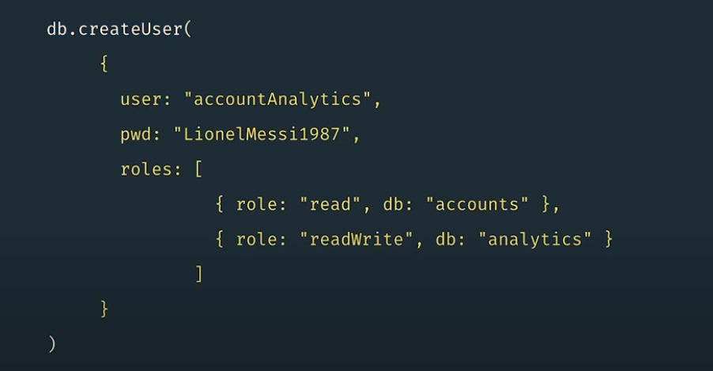

| Authentication | Authorization |
|---|---|
| Kimlik doğrulama, bir kullanıcının kimliğini doğrular | Yetkilendirme, doğrulanmış kullanıcıların kaynaklara ve işlemlere erişimini belirler |
MongoDB, kullanıcılar için erişimi belirlemek için rol tabanlı erişim denetimi (RBAC) kullanır.
NOTE
Rol tabanlı erişim denetimi (RBAC), bir kişinin bir işteki rolüne dayanan bir erişim güvenliği yöntemidir. Rol tabanlı erişim kontrolü, güvenliği sağlamanın bir yoludur çünkü yalnızca çalışanların işlerini yapmak için ihtiyaç duydukları bilgilere erişmelerine izin verirken, kendileriyle ilgili olmayan ek bilgilere erişmelerini engeller. Bir çalışanın rolü kendisine verilen izinleri belirler ve daha düşük düzeyli çalışanların hassas bilgilere erişememelerini veya üst düzey görevler gerçekleştirememelerini sağlar.
Create User

Ekranda, kullanıcı adı ve şifre ile yeni bir kullanıcı oluşturan bir komut görmektesiniz.
İlk öğe db.createUser komutudur.
Bu, yeni kullanıcılar oluşturmak için kullanılan komuttur.
Burada read ve readWrite olarak gördüğünüz rollerde oluşturulmuştur, yani MongoDB'ye dahil edilmiştir, bu nedenle bu rolleri kendiniz oluşturmanız gerekmez.
MongoDB, yöneticilerin ayrıcalıkları birlikte kolayca gruplayabilmesi için bu roller oluşturulmuştur.
Ancak yöneticiler, seçtikleri ayrıcalıklarla kendi özel rollerini oluşturma olanağına da sahiptir.
Example Create Role
use admin
db.createRole(
{
role: "mongostatRole",
privileges: [
{ resource: { cluster: true }, actions: [ "serverStatus" ] }
],
roles: []
}
)